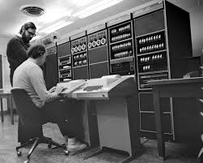

A história da Internet
 A internet, ou rede mundial de computadores, surgiu em plena Guerra Fria, no ano de 1969, e foi criada com objetivos militares, interligando as bases dos Estados Unidos para garantir a comunicação, mesmo em caso de destruição dos meios convencionais durante um possível ataque inimigo.
A ARPANET foi a primeira versão da internet e funcionava através de um sistema de transmissão de dados em rede de computadores por meio de chaveamento de pacotes, dividindo as informações em pequenos volumes.
A investida soviética nunca veio, no entanto, o que o Departamento de Defesa dos Estados Unidos não sabia é que estava iniciando o maior fenômeno midiático do século XX.
A primeira transmissão de um e-mail na história se deu em 29 de outubro de 1969 e tinha como mensagem “LOGIN”, conforme desejava o professor Leonard Kleinrock, da UCLA (Universidade da Califórnia). O computador receptor da mensagem, da Stanford Research Institute, parou de funcionar ao receber a letra “O”.
O governo dos EUA permitiu que pesquisadores desenvolvessem em suas universidades estudos sobre a ARPANET. Professores e estudantes universitários trocavam mensagens, ideias e descobertas pelas linhas da rede mundial, que ainda dava seus primeiros passos.
Através da National Science Foundation, o governo americano investiu na criação dos backbones, sistema com capacidade de dar vazão a grandes fluxos de dados, como canais de fibra ótica, elos de satélite e de transmissão por rádio. Essa é a estrutura física da internet até hoje.
Somente em 1990 a internet alcançou a população. O engenheiro inglês Tim Bernes-Lee desenvolveu a World Wide Web, famoso padrão www, o que possibilitou o uso de interface gráfica e a criação de sites dinâmicos. Aqui também podemos afirmar que nasceu o Marketing Digital.
Empresas como AOL, MSN e Yahoo nasceram nessa época. O correio eletrônico, conhecido hoje como e-mail, passou a ser de uso comum, o que possibilitou o surgimento das primeiras campanhas de e-mail marketing.
Inevitável citar o Google, organização que pode ser considerada uma das mais revolucionárias. Fundado oficialmente em 1998, oferta serviços online, redes sociais, sistema de anúncios e uma centena de outras funções e possibilidades, o que favorece um dos principais objetivos do Marketing Digital: o de ser menos invasivo e mais receptivo, facilitando a busca dos clientes de forma orgânica e natural.
A internet, ou rede mundial de computadores, surgiu em plena Guerra Fria, no ano de 1969, e foi criada com objetivos militares, interligando as bases dos Estados Unidos para garantir a comunicação, mesmo em caso de destruição dos meios convencionais durante um possível ataque inimigo.
A ARPANET foi a primeira versão da internet e funcionava através de um sistema de transmissão de dados em rede de computadores por meio de chaveamento de pacotes, dividindo as informações em pequenos volumes.
A investida soviética nunca veio, no entanto, o que o Departamento de Defesa dos Estados Unidos não sabia é que estava iniciando o maior fenômeno midiático do século XX.
A primeira transmissão de um e-mail na história se deu em 29 de outubro de 1969 e tinha como mensagem “LOGIN”, conforme desejava o professor Leonard Kleinrock, da UCLA (Universidade da Califórnia). O computador receptor da mensagem, da Stanford Research Institute, parou de funcionar ao receber a letra “O”.
O governo dos EUA permitiu que pesquisadores desenvolvessem em suas universidades estudos sobre a ARPANET. Professores e estudantes universitários trocavam mensagens, ideias e descobertas pelas linhas da rede mundial, que ainda dava seus primeiros passos.
Através da National Science Foundation, o governo americano investiu na criação dos backbones, sistema com capacidade de dar vazão a grandes fluxos de dados, como canais de fibra ótica, elos de satélite e de transmissão por rádio. Essa é a estrutura física da internet até hoje.
Somente em 1990 a internet alcançou a população. O engenheiro inglês Tim Bernes-Lee desenvolveu a World Wide Web, famoso padrão www, o que possibilitou o uso de interface gráfica e a criação de sites dinâmicos. Aqui também podemos afirmar que nasceu o Marketing Digital.
Empresas como AOL, MSN e Yahoo nasceram nessa época. O correio eletrônico, conhecido hoje como e-mail, passou a ser de uso comum, o que possibilitou o surgimento das primeiras campanhas de e-mail marketing.
Inevitável citar o Google, organização que pode ser considerada uma das mais revolucionárias. Fundado oficialmente em 1998, oferta serviços online, redes sociais, sistema de anúncios e uma centena de outras funções e possibilidades, o que favorece um dos principais objetivos do Marketing Digital: o de ser menos invasivo e mais receptivo, facilitando a busca dos clientes de forma orgânica e natural.Topicos:
- ARPANET (1969): A rede inicial, com o objetivo de interligar laboratórios de pesquisa e permitir a troca de informações durante a Guerra Fria.
- TCP/IP (1983): O protocolo que estabelece a comunicação entre redes, tornando possível a interoperabilidade entre diferentes sistemas.
- World Wide Web (1989): Criada por Tim Berners-Lee, com o HTML, HTTP e navegadores, facilitando a navegação e o acesso à informação na internet.
- Popularização: A internet começou a se popularizar no início dos anos 1990, com a criação de provedores de acesso comerciais e a redução do custo dos computadores.
- Brasil: A internet chegou ao Brasil em 1988, através de universidades e centros de pesquisa, e se popularizou a partir de 1995 com o lançamento do primeiro provedor comercial.
- Evoluções: A internet evoluiu para a web 2.0 com a interatividade e o surgimento das redes sociais, e para a web 3.0 com a personalização e a inteligência artificial.
